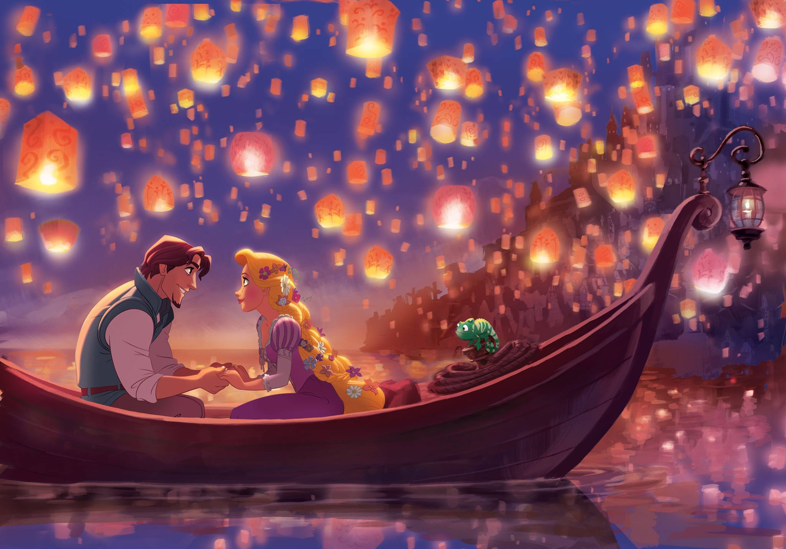

My favorite childhood memory was my 9 years party because it was my first big party in my life and all my family and friends were there. I had a beatiful pink dress and a feel so exited for spend time with all my family and friends, we play every afternoon and have very delicios food and candys, also I remember that my parents tragieron mariachis and was so emotive. All in this day was perfect and it was like a drim of every girl.
